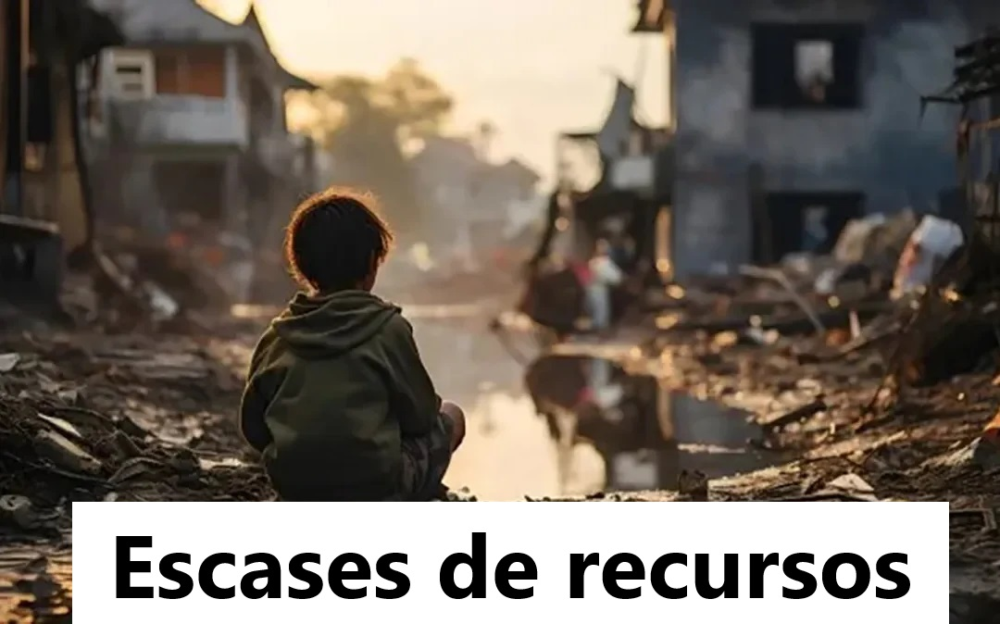

Principales causas porque las personas no tienen estudios de grado superior
Es muy comun que la mayoria de jovenes no puedad tener un grado de estudio superior debido a estos principales motivos.


Es muy comun que la mayoria de jovenes no puedad tener un grado de estudio superior debido a estos principales motivos.